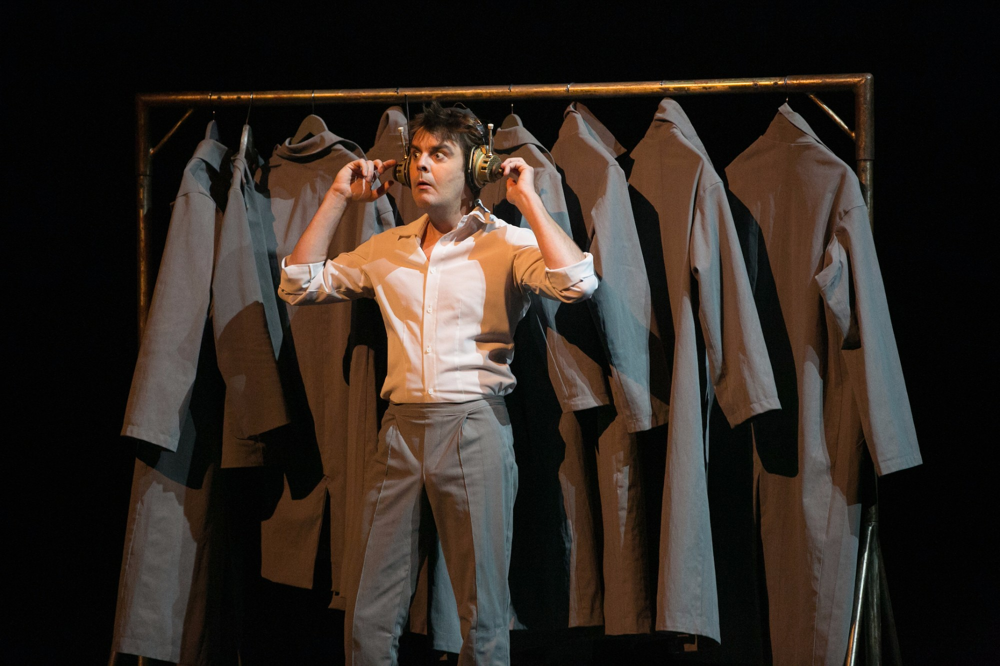
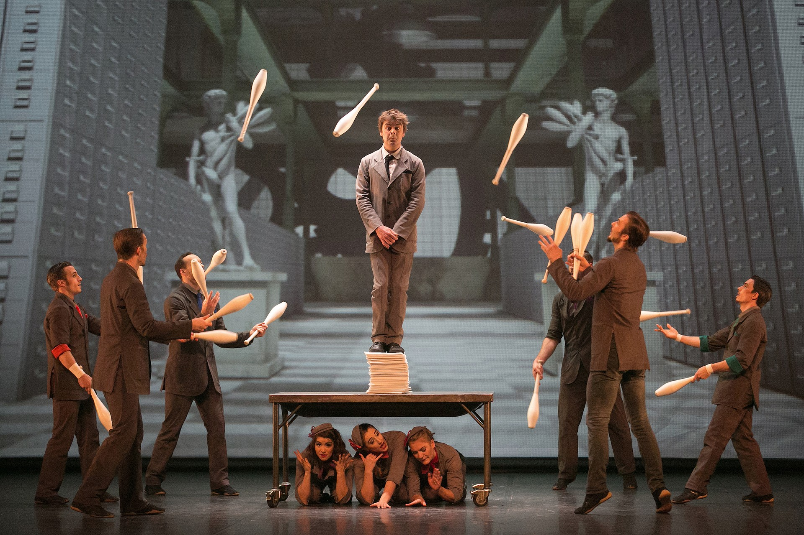

新马戏时尚秀《Cirkopolis大都会》
概述：
色彩刺穿了灰色的工业景象，唤醒了一位办公室职员。
他发现自己被卷入包罗杂技，音乐，舞蹈和戏剧奇幻旅程。
在孤独的工业城市中，在幻想与现实的边缘，与他人建立了真正的情感联系……
百老汇戏剧委员会大奖冠军作品 -- 《大都会》
作为2016中加文化交流年加拿大驻政府年度力荐项目，新马新时尚秀《大都会》的表演融合了马戏，舞蹈，体育，戏剧表演以及时尚运动等多种现代艺术表现形式。12名多才多艺的演员在舞台上令人紧张窒息的表演，无不揭示出“反抗单调生活，重新发现个体的价值”的内涵，挑战大都会这个工业城市的种种限制。在这个世界里，想象力战胜了苍白的现实，一个个无名的黑白剪影最终焕发出绚丽的色彩。《大都会》的舞台设计极富创造性，音乐和视频都为原创。2014年《大都会》更是击败众多百老汇及外百老汇众多优秀作品获纽约戏剧评委会 “最佳剧场戏剧体验奖”。此次中国巡演将从2016年6月至9月，在中国包括北京上海深圳重庆武汉等20个城市进行。其中7月3日-7月9日在上海大剧院炫光登场。
加拿大国宝级马戏剧团 - 炫光马戏工场
成立于1993年，来自加拿大“新马戏之都”蒙特利尔的炫光马戏工场致力于新马戏艺术的重生，创立至今创作了多部充满魔力的演出。剧团不断地追求艺术上的完美，是现代马戏艺术的领导者之一。炫光马戏工场的艺术家们多才多艺，善于打破规则。他们的演出用一种突破性的原创方式将新马戏艺术与音乐、舞蹈、戏剧相结合，充满戏剧性和人文色彩。
炫光马戏工场创作了10部原创作品，并在全球40多个国家、440个城市中举办了4000多场演出。
加拿大跨界艺术家 — 炫光马戏工场创始人、《大都会》联合导演 让诺·潘恰德
1992年，作为太阳马戏的优秀演员让诺和太阳马戏团一起去日本演出了Fascination并获得了巴黎明日国际新马戏节的铜奖。他回到加拿大几个月后，他成立了炫光马戏工场，并出任艺术总监，专心致力于舞台表演。
让诺的心中一直有一颗冒险的心，他相信每一个好的上座率的核心就是冒险刺激。只要观众屏住呼吸，你就成功了。但是剧团同样需要诗意，幽默，能量和敏感度。作为现代马戏表演的先驱者，炫光马戏工场的作品大多糅合了多种现代元素：舞蹈，竞技体育，香颂，古典音乐，戏剧等。
2003年，他成立了北美第一个马戏节。2006年，他负责意大利都灵奥林匹克运动会的新马戏项目。剧团庆祝成立20周年的时候，让诺跨界发展到了其他领域。不仅受邀蒙特利尔时装周担任评委，参与了蒙特利尔博物馆big-bang艺术展布展工作。2013年夏天，更是魁北克历史博物馆邀请让诺担任特别展的艺术总监。从2009年开始，他任职国际新马戏艺术网络- En Piste-的董事。
创作体验
1、“《大都会》是一个十字路口，在这里想象与现实，个性与社会，限制与可能性相互交叉碰撞。这里有诗意的生活，即惊险又诙谐，严肃与轻松的氛围相得益彰。走进《大都会》，观众会完全释放自己，让希望带着自己展翅飞翔。”被誉为“马戏界的诺兰”《大都会》的创意总监和联合导演让诺·潘洽德这样说。
2、“它的舞台设计将观众带入一个简单但奇特、又精雕细琢的宇宙。雄伟肃穆城市，巨大的齿轮和幽黑的入口形象地表现了机械社会对个性的扼杀。随着剧情展开，炫光马戏工场的12名表演者用勇气、幻想、音乐和幽默战胜了无尽的黑暗，超越了平淡乏味的日常生活。”罗伯特·马斯柯特
媒体评价——评论家们因《大都会》而疯狂
1、纽约时报
“有比《大都会》更大的演出，（…）但我敢保证没有更美丽的”
2、悉尼先驱太阳报
“《大都会》的表演将新马戏的整体水准又提升到了一个新的层面。”
“ 来自蒙特利尔，一个因马戏团血统而出名的城市，《大都会》绝对是个新马戏开膛手。它实在是太令人叹为观止了！”
3、纽约邮报
“前有马戏团，后有炫光马戏工场。”
“……这些人是在另一个层次上。似乎一切都更好：更困难、更大胆、更具野心。”
在欧洲，评论界也是同样的赞口不绝。
4、英国的《The stage》杂志
“炫光马戏工场创造的另一颗宝石”。
5、芬兰的《Demokraatti》
“精心设计的编舞突出了艺术家精湛技艺。舞蹈和动作主宰了整场演出。 [...]一个半小时从来没有这么飞快的流过”
6、比利时《Le Soir》杂志
“（它）超越了马戏表演，它再次发明了马戏，角度新颖，是绝对的原创。它能唤醒你所有的感官，让你目眩神迷地走出剧院。”
-- 2016 中国巡演
此次中国巡演将从2016年6月至9月，在中国包括北京上海深圳重庆武汉等19个城市进行。其中7月3日-7月9日在上海大剧院炫光登场。